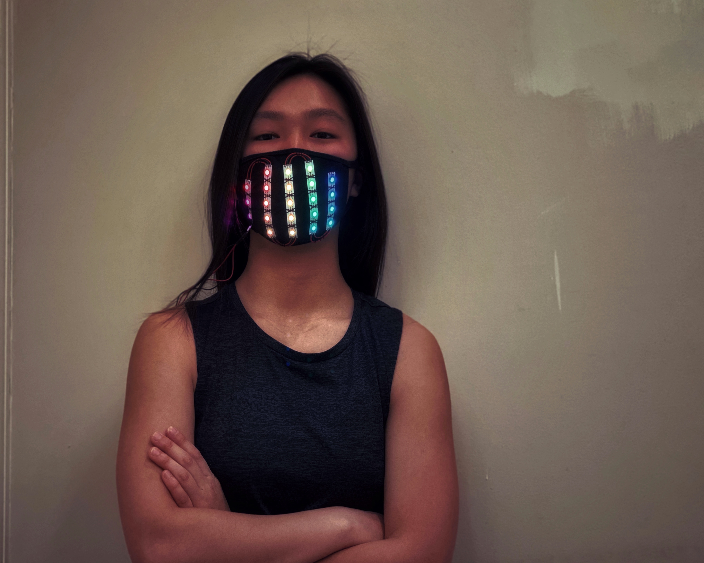

Masked Expressions
Completed: February 2020

Description:
Our facial expressions often say more than our words. But when we are required to cover our face with a mask, how can we still continue to express ourselves?
I built this LED light-up mask in February of 2020, just as we were starting to comprehend the severity of the COVID-19 pandemic. As someone who is known for smiling constantly, for me, having to wear a mask felt like losing a part of my personality and my ability to connect with others. This mask, which has LED strips sewn into the fabric and can be programmed to any customized pattern, was my way of showing the world that even through the hardships we faced, my fellow humans would always give me a reason to smile.